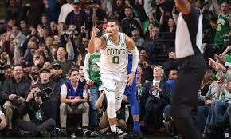
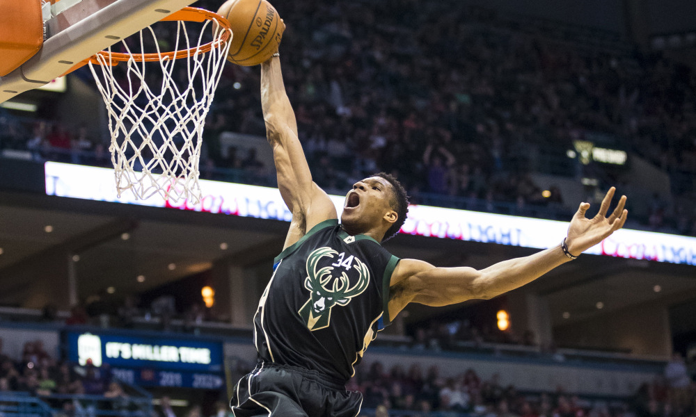

Game 1: Utah Jazz vs New Orleans Pelicans
My Pick:
Utah Jazz
Why I'm Rolling with them:
The Pelicans have been on a tear, and are currently sitting at 4-0 and the top of the Western Conference. But they showed signs of faltering last night against the Nets, and I'm wary to pick a team on the tail end of a back to back. Anthony Davis will bounce back, but the Jazz have been playing good basketball, with Joe Ingles proving he is a top shooter in the league, and Rudy Gobert terrorizing the paint. Jazz take it, 108-103
Game 2: Boston Celtics vs Detroit Pistons
My Pick:
Boston Celtics
Why I'm Rolling with them:
The Pistons are undefeated. The Celtics have looked sloppy. That's not enough to change my view on the fact that Bostons athletic wings should provide Griffin with a real challenge, and their guards are leagues above Detroit. Detroit should dominate the rebounding matchup, but don't count out Horford to make smart defensive plays and keep Drummond honest. I have the Celtics winning 115-106
 Jayson Tatum has been on a tear this seasonGame 3: Philadelphia 76ers vs Charlotte Hornets
My Pick:
Philadelphia 76ers
Why I'm Rolling with them:
Embiid may be out tonight, but luckily Charlotte doesn't have the inside presence to capitalize. They're going to be tired, on the second night of a back to back where they looked very good against a weak Bulls team, but the 76ers are a different beast. Ben Simmons will have a great game, as Charlotte's perimeter defense is not enough to stop him from working his way inside. 76ers, 118-107
Game 4: Chicago Bulls vs Atlanta Hawks
My Pick:
Atlanta Hawks
Why I'm Rolling with them:
Disclaimer - I love Trae Young. Atlana's trade is looking better by the minute, as he had a monster 35-11 game against the Cavaliers earlier this week. That said, that isn't the only reason I have the Hawks winning. I'm a big believer in going with the rested team, and the Bulls had a brutal game last night against Charlotte. High scoring game with the Hawks winning 123-115
Game 5: Indiana Pacers vs Cleveland Cavaliers
My Pick:
Indiana Pacers
Why I'm Rolling with them:
There's no sugarcoating it. The Cavs are bad. They have no real defensive presence, and allow guards to penetrate to the basket at will. Kevin Love isn't looking great so far as a first option, but should still be counted on for 18-8 tonight. But Sabonis has been playing extremely well off the bench, and Oladipo should be able to have a dominant performance against the lack of real defensive guards. Pacers 111-98
Game 6: Portland Trail Blazers vs Miami Heat
My Pick:
Portland Trail Blazers
Why I'm Rolling with them:
Portland's backcourt has been hot to start the year, and they've gotten good production from their bench to get off to a 3 and 1 start. The Heat are 2-2, but have played 4 mediocre teams. I like Dragic, but beyond that Miami rely on gritty basketball and that won't be enough to beat the Blazers. Watch out for Dame as Portland wins it 117-111
Game 7: Phoenix Suns vs Memphis Grizzlies
My Pick:
Memphis Grizzlies
Why I'm Rolling with them:
Devin Booker is out. Phoenix doesn't really have any other primary ball handlers, so they're going to have to play out of the post more tonight. Watch Ayton get 5 assists, but the Grizzlies have a way more balanced roster. Conley will go off, and Marc Gasol will limit Ayton's scoring effectiveness. Grizzlies take it 118-104
Game 8: Orlando Magic vs Milwaukee Bucks
My Pick:
Orlando Magic
Why I'm Rolling with them:
This is my hot take for the night. The Magic have the long, athletic defenders needed to disrupt Giannis, (which still means he gets like 27-8-10). The Bucks played last night, and I think they're focused on their upcoming matchup with the Raptors. Magic's lack of a point guard will hurt them against Bledsoe, but if the Magic can get hot they take this one 120-115
 Giannis is making an early bid for the MVPGame 9: Los Angeles Lakers vs San Antonio Spurs
My Pick:
Los Angeles Lakers
Why I'm Rolling with them:
Lebron and the Lakers seem to be figuring it out. Lonzo's stepback over Jokic in their win against the Nuggets was filthy. I'm a big believer in the Spurs continued excellence, but they barely squeezed by the Lakers in San Antonio. If Lebron hits those free throws, they lose. In Los Angeles, I give the edge to the Lakers 128-119